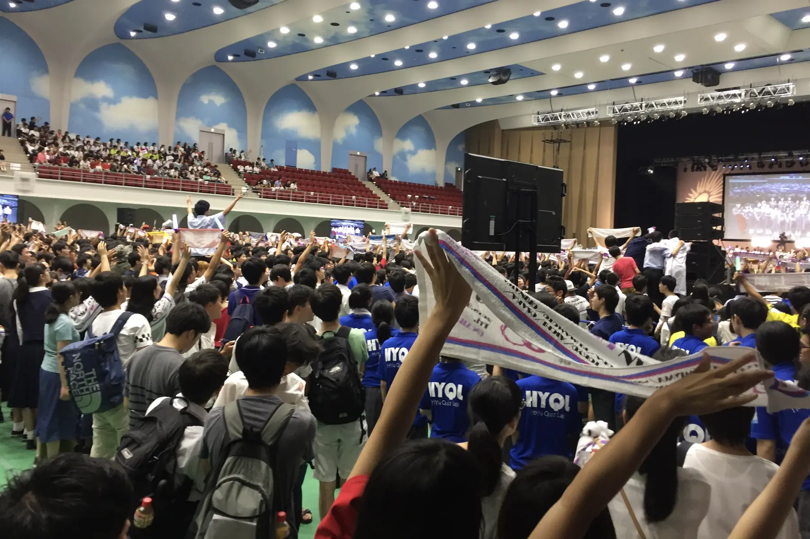
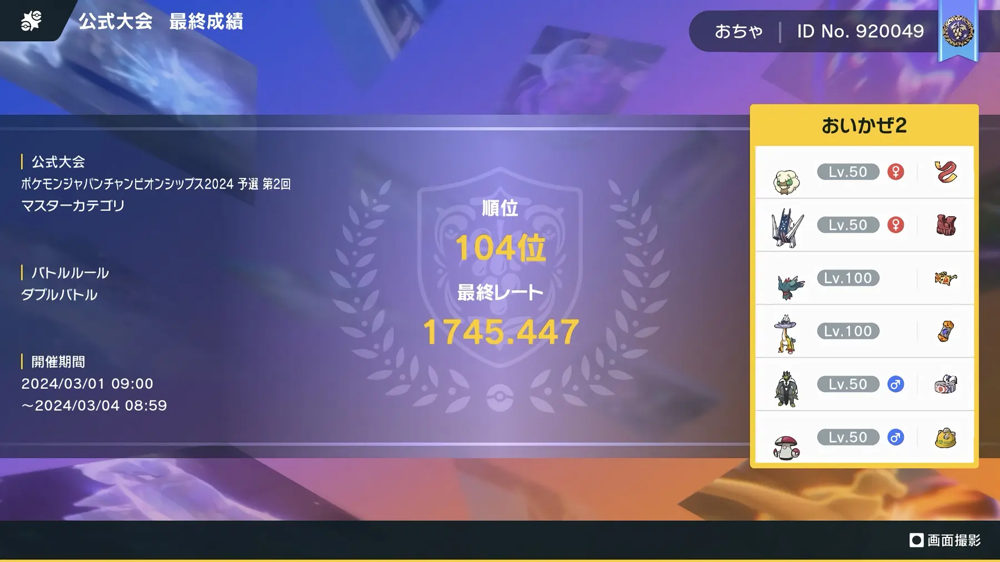
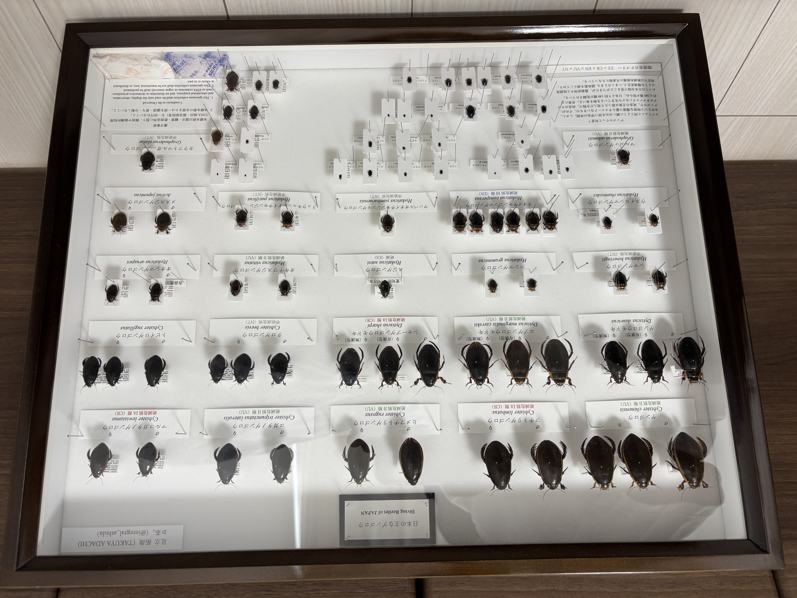

競技クイズ
高校１年生の頃、テレビ番組『高校生クイズ』に憧れて始めてみたのがきっかけ。とりわけ謎解きクイズが好きです！
くわしくみるわたしの趣味を記録していくようなwebです
最終更新：2026/10/29

高校１年生の頃、テレビ番組『高校生クイズ』に憧れて始めてみたのがきっかけ。とりわけ謎解きクイズが好きです！
くわしくみる
暇を持て余したコロナ禍にオンライン対戦をやってみたのがきっかけ。好きなポケモンはエルフーンです。可愛くて、強いので。
くわしくみる
幼少期に読んだ一冊の図鑑をきっかけにゲンゴロウに夢中です。現在も学生時代の友人と水昆採集をして楽しんでいます！
図鑑をひらく